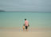
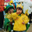

2001年4月29日 9時49分撮影
ホテルの敷地内にある「ハンモック」に揺られて喜んでいます。
由起子はこの近くにある「ブランコ」も大好きでした。
2001年4月28日 15時18分撮影
海の色がとっても綺麗！
去年の由起子は足に砂がつくのを嫌がっていたのに・・・。2001年4月28日 8時49分撮影
今日から3泊の予定で「沖縄の宮古島」へ。ウキウキ・ワクワク！2001年4月22日 14時45分撮影
動物園の帰り道、上本町駅から伊勢志摩ライナーに乗りました。
ピースしてぇ～と言ってるのに「バンジャーイ」です。2001年4月22日 11時56分撮影
ずーっと行こうねと約束していた「天王寺動物園」がやっと実現！2001年4月21日 14時19分撮影
あいにくのお天気なので、公園へは行けません。
かわりに「ジャスコのメリーゴーランド」で大満足の由起子！2001年4月7日 11時12分撮影
お家の近所でお花見。風が吹くと桜の花びらが舞い落ちます。
なんとも風情があります。。。2001年4月5日 11時29分撮影
由起子 保育所の入所式。とっても良いお天気の中、新調した
少し大きめの制服と帽子で、入所式に参加しました。
2001年3月29日 15時27分撮影
岡山県の倉敷チボリ公園にて。
ショーが終わってから「カエルちゃん」と記念撮影しました。
少し前までは、このかぶりものが苦手だったのに・・・。2001年4月15日 11時42分撮影
デジカメ初撮りは長靴をはいた由起子です。とても良いお天気
なのに、長靴はやめてよー。